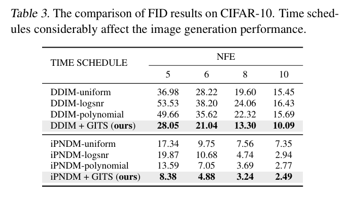
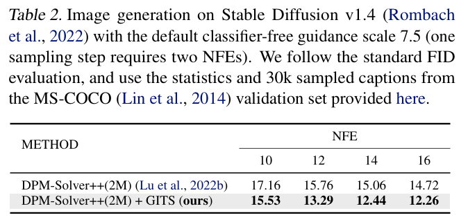

全文翻译
基于扩散的生成模型利用随机微分方程（SDE）及其等效的常微分方程（ODE），在复杂数据分布和易处理的先验分布之间建立平滑连接。在本文中，我们揭示了扩散模型基于ODE的采样过程中几个有趣的轨迹特性。我们刻画了一个隐式去噪轨迹，并讨论了其在形成具有强形状规律性的耦合采样轨迹中所起的关键作用，且该作用与生成内容无关。我们还描述了一种基于动态规划的方案，使采样中的时间安排能更好地适应底层轨迹结构。这一简单策略对任何给定的基于ODE的数值求解器只需进行最小修改，且计算成本可忽略不计，同时在图像生成中表现出优异性能，尤其是在5~10次函数评估时。
1. 引言
基于扩散的生成模型（Sohl-Dickstein等人，2015；Song & Ermon，2019；Ho等人，2020；Song等人，2021c）已引起广泛关注，并在图像（Dhariwal & Nichol，2021；Rombach等人，2022）、音频（Kong等人，2021）、视频（Ho等人，2022；Blattmann等人，2023），尤其是文本到图像合成（Saharia等人，2022；Ruiz等人，2023；Podell等人，2024；Esser等人，2024）领域取得了显著成果。这些模型通过正向过程向数据中引入噪声，随后通过反向采样生成数据，两个过程均通过随机微分方程（SDE）进行建模和表征（Song等人，2021c）。在基于扩散的生成模型中，核心要素是分数函数（score function），定义为对数数据密度关于输入的梯度（Hyvärinen，2005；Lyu，2009；Raphan & Simoncelli，2011；Vincent，2011），且与模型的具体结构无关。训练此类模型涉及学习分数函数，这可通过开发依赖噪声的去噪模型实现。该模型的训练目标是最小化正向过程中生成的数据 - 噪声对在数据重建中的均方误差（Kingma 等人，2021；Karras 等人，2022）。为了生成数据，基于扩散的生成模型通过数值求解器求解所获得的基于分数的反向 SDE。最近的研究表明，反向 SDE 可以有效地被等效的概率流常微分方程（PF-ODE）替代，同时保留相同的边际分布（Song 等人，2021c；a；Lu 等人，2022a；Zhang 与 Chen，2023；Zhou 等人，2023）。这种基于确定性 ODE 的生成方式将随机采样的需求减少到仅初始样本选择的随机性，从而简化了整个生成过程并提供了更强的控制能力（Song 等人，2021a；c）。在 PF-ODE 框架下，从白高斯噪声开始，采样轨迹通过运行具有离散时间步长的数值求解器形成。这些时间步长共同构成了采样中使用的时间调度。
尽管扩散模型展现出强大的生成能力，但其诸多数学和统计特性仍不明确，这主要归因于SDE和神经网络模型的复杂性，以及涉及的数据维度较高。特别是实证研究表明，基于PF-ODE的扩散模型的采样轨迹存在一种有趣的规律性（Chen等人，2023a），即样本路径倾向于呈现“回旋镖”形状，或具体而言如图1所示的线性-非线性-线性结构。此外，我们观察到每条采样轨迹几乎不偏离其起点和终点的连线，且该偏差可通过两到三个正交基有效近似（第3节）。无论初始随机样本或对应的真实数据样本如何，这种模式在不同轨迹中一致出现（见图4）。这种简单结构保证了合成不同样本时可共享通用时间安排，并使我们能够安全地采用大采样步长而不会引入较大截断误差（Song等人，2021a；Karras等人，2022；Lu等人，2022a），尤其是在第一步（Dockhorn等人，2022；Zhou等人，2023）。
| 图1. 扩散模型中基于ODE采样的几何示意图。每个初始样本（来自噪声分布）从一个大球体出发，沿着规则的采样轨迹收敛到最终样本（位于数据流形中），该轨迹由一条隐式去噪轨迹控制。 |
我们假设这种规律性反映了采样轨迹的某些潜在几何结构。本文旨在阐明这一现象。我们首先对基于ODE的采样轨迹进行简化，揭示出一个隐式去噪轨迹。该去噪轨迹对应于采样轨迹上每个点的旋转，从而决定了采样轨迹的曲率（第4.1节）。基于这一洞察，我们表明，当使用变宽度核密度估计（KDE）从训练样本近似原始数据分布时，去噪轨迹具有闭式解。这与经典的均值漂移算法（Fukunaga & Hostetler，1975；Cheng，1995；Comaniciu & Meer，2002）类似，但其重要区别在于我们在KDE中使用时变宽度（第4.2节）。尽管基于KDE的解在实际求解采样轨迹时不可行，但其渐近收敛于基于真实数据分布的最优解，且其闭式形式便于理论分析。我们证明，线性-非线性-线性结构可自然地从PF-ODE的这一解释中推导得出。这种轨迹规律性统一了先前的观察，并阐明了许多现有的加速扩散模型采样的启发式方法。利用采样轨迹的形状规律性，我们引入一种基于动态规划的高效加速采样方法，以确定最优时间安排。实验结果表明，基于轨迹规律性的加速采样可在少量（≤10次）函数评估中显著提升基于扩散的生成模型的性能。
我们的主要贡献总结如下：
• 描述并验证了基于ODE的扩散采样轨迹的强形状规律性，即采样轨迹近似遵循线性-非线性-线性结构的相似形状。
• 通过带时变带宽的KDE数据建模下的去噪轨迹闭式解，解释了这一规律性。
• 开发了一种基于动态规划的方法，利用轨迹规律性寻找采样步的最优时间安排，该方法引入的开销极小且能提升图像质量。
2. 预备知识
成功的生成建模需要将数据分布 $ p_d $ 与非信息性、易处理的分布 $ p_n $ 建立联系。扩散模型通过向数据中逐步引入高斯白噪声（有效消除其结构），再通过一系列去噪步骤从噪声样本中重建合成数据来实现这一目标。正向过程可建模为从 $ x_0 \sim p_d $ 开始的扩散过程 $\{x_t\}_{t=0}^T$，其是线性伊藤随机微分方程（SDE）的解（Song等人，2021c；Karras等人，2022）：
其中 $ w_t $ 表示维纳过程；$ f(t)x_t $ 和 $ g(t) $ 分别为漂移系数和扩散系数。在初始条件 $ p_0(x_0) = p_d(x_0) $ 下，边际分布 $ p_t(x_t) $ 按著名的福克-普朗克方程演化（Oksendal，2013）。通过合理设置漂移和扩散系数，数据分布可通过正向过程平滑转换为（近似）噪声分布 $ p_T(x_T) \approx p_n $。此时转移核始终为高斯分布，即 $ p_{0t}(x_t | x_0) = \mathcal{N}(x_t; s(t)x_0, s^2(t)\sigma^2(t)I) $，其中 $ s(t) = \exp(\int_0^t f(\xi) d\xi) $，$ \sigma(t) = \sqrt{\int_0^t [g(\xi)/s(\xi)]^2 d\xi} $，为简化符号，后文记为 $ s_t $、$ \sigma_t $。信噪比（SNR）定义为 $ 1/\sigma_t^2 $（Karras等人，2022），更多细节见附录A.1。
文献中常用两种形式的SDE，即方差保持（VP）SDE和方差爆炸（VE）SDE（Song等人，2021c），二者均广泛应用于大规模生成模型（Ramesh等人，2022；Rombach等人，2022；Balaji等人，2022；Yuan等人，2023）。我们的分析基于VE-SDE，且结果可轻松扩展至VP-SDE。事实上，我们可安全地移除式（1）中的漂移项而不改变底层扩散模型的本质特征（见备注2.1，证明见附录A.1）。因此，我们仅考虑标准化VE-SDE：
其中 $ \sigma_t $ 为预定义的递增噪声调度。
正向SDE（2）的反向过程由另一SDE描述，其通过反向采样从噪声中合成数据（Feller，1949；Anderson，1982）。值得注意的是，存在一个概率流常微分方程（PF-ODE），其在扩散过程的每个时间步保持与SDE相同的边际分布 $\{p_t(x_t)\}_{t=0}^T$（Song等人，2021c）：
ODE的确定性特性在生成建模中具有多项优势，包括高效采样、唯一编码和有意义的隐变量操作（Song等人，2021c,a）。因此，本文选择该公式分析扩散模型的采样行为。
训练：模拟上述PF-ODE（3）需要分数函数 $\nabla_{x_t} \log p_t(x_t)$（Hyvärinen，2005；Lyu，2009），其通常通过去噪分数匹配（Vincent，2011）估计。由于分数函数与后验期望之间存在深层联系，即 $\mathbb{E}(x_0 | x_t) = x_t + \sigma_t^2 \nabla_{x_t} \log p_t(x_t)$（Robbins，1956；Efron，2011；Raphan & Simoncelli，2011），我们可训练去噪自编码器（DAE）$ r_\theta $ 来估计条件期望 $\mathbb{E}(x_0 | x_t)$，并将其转换为分数函数。使用加权函数 $\lambda(t)$ 在不同噪声水平下训练该神经网络的目标函数为：
最优估计器 $ r_\theta^{\ast}(x_t; \sigma_t) $（又称贝叶斯最小二乘估计器）等于 $\mathbb{E}(x_0 \mid x_t)$，因此有 $ r_\theta^{\ast}(x_t; \sigma_t) = x_t + \sigma_t^2 \nabla_{x_t} \log p_t(x_t) $。实际中，假设收敛模型近似满足 $ r_\theta(x_t; \sigma_t) \approx r_\theta^{\ast}(x_t; \sigma_t) $，将其代入（3）可得经验PF-ODE：
上述噪声预测模型 $\epsilon_\theta(\cdot, \cdot)$ 已应用于先前工作（Ho等人，2020；Song等人，2021a；Nichol & Dhariwal，2021；Bao等人，2022）。
采样：给定经验PF-ODE（5），生成新样本的方法为：首先从纯噪声 $\hat{x}_{t_N} \sim p_n$ 作为初始条件，然后通过数值方法反向求解该方程，在特定时间调度 $\Gamma = \{t_0 = \epsilon, \cdots, t_N = T\}$ 下得到序列 $\{\hat{x}_{t_n}\}_{n=0}^N$。我们用 $\hat{x}_{t_n}$ 表示数值方法生成的样本，以区别于精确解 $x_{t_n}$。最终样本 $\hat{x}_{t_0}$ 近似服从数据分布 $p_d$，该序列称为采样轨迹。实际中，有多种受经典数值方法启发的采样策略用于求解反向PF-ODE（5），包括欧拉法（Song等人，2021a）、休恩法（Karras等人，2022）、龙格-库塔法（Song等人，2021c；Liu等人，2022；Lu等人，2022a）和线性多步法（Liu等人，2022；Lu等人，2022b；Zhang & Chen，2023；Zhao等人，2023）。
3. PF-ODE采样轨迹的规律性
如第1节所述，扩散模型的PF-ODE框架下，采样轨迹的形状存在某种规律性，且与生成的具体内容无关。为更好地阐释这一概念，我们开展了一系列实证研究。
3.1 一维投影
在原始高维空间中可视化完整采样轨迹并分析其几何特征极具挑战性。为此，我们首先考察轨迹偏离起点与终点连线的程度，以评估轨迹的线性度（见图1）。这种方法使我们能够对齐并整体观察所有采样轨迹的一般行为。具体而言，轨迹偏差定义为每个中间样本 $\hat{x}_{t_n}$ 到向量 $\hat{x}_{t_N} - \hat{x}_{t_0}$ 的垂直 $L^2$ 距离，如图2中呈“回旋镖”形状的红色曲线所示。此外，我们计算轨迹中 $\hat{x}_{t_n}$ 与最终样本 $\hat{x}_{t_0}$ 的 $L^2$ 距离 $|\hat{x}_{t_n} - \hat{x}_{t_0}|_2$，即图2中的蓝色单调曲线。
| 图2. 在从$t_{N}=80$到$t_{0}=0.002$的采样过程中，采样轨迹表现出与样本距离（蓝色曲线）相比非常小的轨迹偏差（红色曲线）。 |
从图2可观察到，采样轨迹的偏差从 $t=80$ 到约 $t=10$ 逐渐增大，随后在接近最终样本时迅速减小。这一模式表明，初始阶段每个样本可能受多种模式影响，波动较大，而在某个转折点后则强烈受特定模式引导。这一现象支持了在最小时间戳附近密集安排时间间隔、在最大时间戳附近稀疏安排的策略（Song等人，2021a；Lu等人，2022a；Karras等人，2022；Song等人，2023）。然而，当我们考察图2中最大偏差与端点距离的比值时，发现轨迹偏差极小（约为$30 / 8868 ≈0.0034$），表明轨迹具有显著的直线性。此外，沿采样轨迹生成的样本往往从初始点向终点单调移动。
3.2 多维投影
此外，我们对向量 $\hat{x}_{t_N}-\hat{x}_{t_0}$ 的正交补空间进行主成分分析（PCA），以评估轨迹的旋转特性。如图3a所示，首先将每个d维采样轨迹投影到与 $\hat{x}_{t_N} - \hat{x}_{t_0}$ 向量正交的(d-1)维空间，再进行PCA。图3b-3c显示，结合 $\hat{x}_{t_N} - \hat{x}_{t_0}$ 和第一主成分的二维近似显著缩小了与真实轨迹的视觉差异，降低了 $L^2$ 重建误差。这表明每个d维采样轨迹的点均轻微偏离二维平面，因此可通过这种方式有效刻画轨迹的切向量和法向量。
 |
|---|
| 图3. (a) 我们采用d维向量$\hat{x}_{t_{N}}-\hat{x}_{t_{0}}$及其在$(d-1)$维正交补空间上的前几个主成分（PCs）来近似原始d维采样轨迹。(b) ImageNet 64×64上轨迹重建的视觉比较。我们使用$\hat{x}_{t_{N}}-\hat{x}_{t_{0}}$（1-D重建）及其前1个或2个主成分（2-D或3-D重建）来重建真实采样轨迹（顶行）。为放大视觉差异，我们展示了这些轨迹的去噪输出。(c) 我们计算了真实轨迹与直至5维重建的重建轨迹之间的$L^{2}$距离。(d) 前k个主成分解释的方差。我们报告前$k$个特征值之和与所有特征值之和的比率。 |
通过引入额外主成分，我们增强了捕捉采样轨迹扭转的能力，总解释方差提升至约85%（见图3d），从而更精确地近似真实轨迹并进一步降低 $L^2$ 误差（见图3b-3c）。实际应用中，这种近似可有效捕捉所有视觉相关信息，与真实轨迹的偏差几乎不可察觉。因此，我们可利用由两个主成分和向量 $\hat{x}_{t_N} - \hat{x}_{t_0}$ 构成的三维子空间理解高维采样轨迹的几何结构。
基于上述分析，图4展示了在CIFAR-10（Krizhevsky & Hinton，2009）、FFHQ（Karras等人，2019）和ImageNet 64×64（Russakovsky等人，2015）上训练的扩散模型生成的30条随机采样轨迹的可视化结果。值得注意的是，$\hat{x}_{t_N} - \hat{x}_{t_0}$ 轴的尺度比其他两个主成分大若干数量级，表明轨迹始终贴近端点连线，印证了轨迹偏差实验的结论（见图2）。此外，图4准确展示了采样轨迹在过程中逐渐偏离密切平面的行为。有趣的是，每条轨迹均呈现简单的线性-非线性-线性结构，并具有相似形状。这种一致性表明，所有不同初始点的采样轨迹均存在强规律性，与生成内容无关。
| 图4. 我们将在三个不同数据集上生成的30条高维采样轨迹投影到3维子空间中。这些轨迹首先对齐到$\hat{x}_{t_{N}}-\hat{x}_{t_{0}}$的方向（每个样本的此方向不同），然后投影到$\hat{x}_{t_{N}}-\hat{x}_{t_{0}}$正交空间中的前2个主成分上。更多细节见正文。 |
4. 轨迹规律性的理解
我们接下来尝试解释前一节中观察到的轨迹规律性。首先，我们揭示存在一种隐式去噪轨迹，它控制着采样轨迹的旋转，并以凸组合的方式决定后续点（第4.1节）。然后，我们在采样轨迹与数据分布的核密度估计（KDE）近似之间建立联系（第4.2节），这是理解所观察到规律性的关键。
4.1 隐式去噪轨迹
给定一个具有去噪输出 $ r_\theta(\cdot; \cdot) $ 的参数化扩散模型，采样轨迹通过数值求解经验PF-ODE（5）进行模拟，同时会生成一个隐式耦合序列 $ \{ r_\theta(\hat{x}_{t_n}, \sigma_{t_n}) \}_{n=1}^N $，我们将该序列（在无歧义时简记为 $ \{ r_\theta(\hat{x}_{t_n}) \}_{n=1}^N $）称为去噪轨迹。该轨迹遵循PF-ODE $ d r_\theta(x_t; \sigma_t)/d\sigma_t = -\sigma_t [ d^2 x_t / d\sigma_t^2 ] $，实际上包含了相关采样轨迹的曲率信息。以下命题揭示了这两种轨迹的内在联系。
命题4.1：给定概率流ODE（5）及采样轨迹中的当前位置 $ \hat{x}_{t_{n+1}} $（$ n \in [0, N-1] $），通过时间步长为 $ \sigma_{t_{n+1}} - \sigma_{t_n} $ 的 $ k $ 阶泰勒展开预测的下一个位置 $ \hat{x}_{t_n} $ 可表示为：
这是 $ \hat{x}_{t_{n+1}} $ 与广义去噪输出 $ \mathcal{R}_\theta(\hat{x}_{t_{n+1}}) $ 的凸组合，其中：
对于欧拉法（$ k=1 $），有 $ \mathcal{R}_\theta(\hat{x}_{t_{n+1}}) = r_\theta(\hat{x}_{t_{n+1}}) $；对于二阶数值方法（$ k=2 $），有 $ \mathcal{R}_\theta(\hat{x}_{t_{n+1}}) = r_\theta(\hat{x}_{t_{n+1}}) + \frac{\sigma_{t_n} - \sigma_{t_{n+1}}}{2} \frac{d r_\theta(\hat{x}_{t_{n+1}})}{d\sigma_t} $。
推论4.2：去噪输出 $ r_\theta(\hat{x}_{t_{n+1}}) $ 反映了从 $ \hat{x}_{t_{n+1}} $ 出发、时间步长为 $ \sigma_{t_{n+1}} $ 的单个欧拉步预测。
推论4.3：先前提出的每种二阶ODE加速采样方法均对应 $ d r_\theta(\hat{x}_{t_{n+1}})/d\sigma_t $ 的特定一阶有限差分。
证明及更多讨论见附录A.2。式（6）中的比例 $ \sigma_{t_n}/\sigma_{t_{n+1}} $ 表明，我们倾向于保持当前位置，而非转移至 $ t_{n+1} $ 时刻的广义去噪输出。在此框架下，均匀、二次和多项式调度等不同时间调度函数（Song等人，2021a；Lu等人，2022a；Karras等人，2022）本质上代表了不同的加权函数。为简化后续讨论，我们主要关注欧拉法，但其结论可轻松扩展至高阶方法。通过考察无穷小欧拉步的采样过程，可清晰分析连续场景下的轨迹行为。图5展示了两个连续欧拉步的图示。
| 图5. 从当前样本$\hat{x}_{t_{n+1}}$开始的两个连续欧拉步的示意图。基于ODE的采样中，单个欧拉步是去噪输出与当前位置的凸组合，以确定下一个位置。蓝色点形成分段线性的采样轨迹，而红色点形成控制旋转方向的去噪轨迹。 |
我们进一步推导得出，分段线性采样轨迹中的每个中间点 $ \hat{x}_{t_n} $（$ n \in [1, N-1] $）近似由所选时间调度决定，因为：
在此情形下，去噪输出 $ r_\theta(\hat{x}_{t_{n+1}}) $ 似乎围绕 $ \hat{x}_{t_n} $ 向 $ r_\theta(\hat{x}_{t_n}) $ 振荡，类似于单摆（Young等人，1996）。每个采样步中，摆长通过系数 $ \sigma_{t_n}/\sigma_{t_{n+1}} $ 有效缩短，初始摆长约为 $ \sigma_T \sqrt{d} $。这种特定结构存在于所有轨迹中，理论证明和实证证据详见附录A.3.3。实际中，每次振荡的幅度极小（≈$ 0^\circ $），整个采样轨迹仅轻微偏离二维平面，且如第3节所述，这些偏差可通过少数正交基表示。
4.2 轨迹结构的理论分析
接下来我们证明，使用带训练数据样本的高斯核密度估计（KDE）时，去噪轨迹具有闭式解。
给定数据集 $ D := \{ y_i \in \mathbb{R}^d \}_{i \in I} $，其中包含从未知数据分布 $ p_d $ 独立同分布采样的 $ |I| $ 个数据点，正向扩散过程（2）在每个时刻的边际密度为带宽 $ \sigma_t^2 $ 的高斯KDE，即：
其中经验数据分布 $ \hat{p}_d(y) $ 为多个狄拉克 delta 函数的和，即 $ \hat{p}_d(y) = \frac{1}{|I|} \sum_{i \in I} \delta(| y - y_i |) $。此时，训练去噪自编码器的最优去噪输出为原始数据点的凸组合：
其中每个权重 $ u_i $ 基于输入 $ x_t $ 与数据集中 $ y_i $ 的时间缩放归一化 $ L^2 $ 距离计算，且满足 $ \sum_i u_i = 1 $。证明见附录A.3.1。上式与均值漂移算法（Fukunaga & Hostetler，1975；Cheng，1995；Comaniciu & Meer，2002；Yamasaki & Tanaka，2020）的迭代公式高度相似，特别是退火均值漂移或多带宽均值漂移（Shen等人，2005）——后者通过在迭代中单调减小带宽，作为一种元启发式算法避免经典均值漂移易陷入局部极大值的问题。
基于这一联系，我们刻画了扩散采样的局部行为，即每条采样轨迹在样本似然上单调收敛，其耦合的去噪轨迹始终实现更高似然（证明见附录A.3.4）。我们还将扩散采样的全局行为刻画为线性-非线性-线性的模式搜索路径。在最优情形下，当带宽 $ \sigma_t $ 足够大时，去噪输出（即退火均值向量）从伪模式（数据集均值）出发，即 $ r_\theta^{\ast}(x_t; \sigma_t) \approx \frac{1}{|I|} \sum_{i \in I} y_i $。同时，采样轨迹初始位于近似单峰高斯分布，具有线性分数函数 $ \nabla_{x_t} \log p_t(x_t) = (r_\theta^{\ast}(x_t; \sigma_t) - x_t)/\sigma_t^2 \approx -x_t/\sigma_t^2 $。由于测度集中性，数据集均值的范数与 $ x_t $ 的范数相比可忽略不计，该近似成立（见引理A.11）。随着采样过程中 $ \sigma_t $ 单调减小，$ \hat{p}_t(x_t) $ 的模式数量增加（Silverman，1981），简单分布曲面逐渐转变为复杂多峰曲面。在中等 $ \sigma_t $ 阶段，由于多个数据点的显著影响，分数函数呈现非线性。最终，采样轨迹被带宽足够小的某个真实数据模式吸引，分数函数再次呈现线性，即 $ \nabla_{x_t} \log p_t(x_t) \approx (y_k - x_t)/\sigma_t^2 $，其中 $ y_k $ 表示 $ x_t $ 的最近数据点。通过这种方式，采样轨迹有望搜索到全局模式，类似退火均值漂移（Shen等人，2005）。有趣的是，我们可证明整个采样轨迹长度约为 $ \sigma_T \sqrt{d} $（见附录A.3.3）。上述分析表明，最优采样轨迹仅重现数据集，但实际中，分数函数的轻微偏差可确保扩散模型的生成能力（见附录A.3.5）。
5. 几何启发的时间调度
基于ODE的数值求解器（如欧拉法（Song等人，2021c）或龙格-库塔法（Liu等人，2022；Zhang & Chen，2023））在采样过程中依赖预定义的时间调度 $\Gamma = \{t_0 = \epsilon, \cdots, t_N = T\}$。通常，给定初始时间 $t_N$ 和最终时间 $t_0$，中间时间步 $t_1$ 到 $t_{N-1}$ 通过均匀、二次（Song等人，2021a）、对数信噪比（Log-SNR）（Lu等人，2022a;b）和多项式函数（Karras等人，2022；Song等人，2023）等启发式策略确定。实际上，时间调度反映了我们对采样轨迹形状的先验知识。在分数函数评估次数（NFE）固定的约束下，改进的时间调度可减少每个数值步的局部截断误差，并有望最小化全局截断误差，从而使数值方法生成的样本质量接近给定经验PF-ODE（5）的精确解。
第3节的分析表明，每条采样轨迹均为简单的低维“回旋镖”曲线。因此，我们可利用这一几何结构，根据“轨迹曲率较小时分配较大时间步长，曲率较大时分配较小时间步长”的原则重新分配中间时间戳。此外，不同轨迹形状高度相似，这使得我们只需通过少数“预热”样本即可估计采样轨迹的公共结构。我们将实现上述目标的方法称为{\ast}几何启发时间调度（GITS）*，具体细节如下。实验表明，GITS具有适应性强、易于实现且计算开销可忽略的特点。
中间时间戳的分配可建模为整数规划问题，并通过动态规划搜索最优时间调度（Cormen等人，2022）。首先定义搜索空间 $\Gamma_g$，其为包含所有可能中间时间戳的细粒度网格。然后，通过局部截断误差衡量轨迹曲率。具体而言，定义从当前位置 $x_{t_i}$ 到下一位置 $x_{t_j}$ 的代价为欧拉步与真实预测的差异，即 $c_{t_i \to t_j} := D(\hat{x}_{t_i \to t_j}, x_{t_i \to t_j})$，其中 $t_i$ 和 $t_j$ 为 $\Gamma_g$ 中的两个中间时间戳且 $t_i > t_j$。根据经验PF-ODE（5），真实预测为 $x_{t_i \to t_j} = \int_{t_i}^{t_j} x_{t_i} + \epsilon_\theta(x_t) \sigma_t’ dt$，欧拉预测为 $\hat{x}_{t_i \to t_j} = x_{t_i} + (\sigma_{t_j} - \sigma_{t_i}) \epsilon_\theta(\hat{x}_{t_i}) \sigma_t’$。代价函数 $D$ 可定义为原始像素空间的 $L^2$ 距离（即 $D(x, y) = |x - y|_2$）或其他用户指定的度量。在计算所有成对代价（构成代价矩阵）后，该问题转化为标准最小代价路径问题，可通过动态规划求解，算法细节见附录A.4.1。
此外，利用我们发现的轨迹规律性，还存在多种确定时间调度的方法（如使用可训练神经网络）。
6. 实验
我们遵循EDM框架（Karras等人，2022；Song等人，2023）的设置和实验设计，其中 $f(t)=0$，$g(t)=\sqrt{2t}$，且 $\sigma_t=t$。在此参数化下，正向VE-SDE表示为 $dx_t = \sqrt{2t} ~dw_t$，对应的经验PF-ODE为：
时间域通过多项式函数 $t_n = \left(t_0^{1/\rho} + \frac{n}{N}(t_N^{1/\rho} - t_0^{1/\rho})\right)^\rho$ 划分，其中 $t_0=0.002$，$t_N=80$，$n \in [0, N]$，且 $\rho=7$。在第3节详细讨论的一维投影（图2）和多维投影（图4）的可视化分析中，我们使用欧拉方法模拟每条采样轨迹，共进行100次分数函数评估。图2中轨迹偏差的均值和标准差基于ImageNet 64×64上生成的5000个样本计算，图3d中PCA的解释方差比基于1000个生成样本计算。
我们从高斯噪声中随机选择256个“预热”样本启动动态规划实验，以创建更精细的网格，然后计算代价矩阵。“预热”样本的数量并非关键超参数，但减少其数量通常会增加方差，如表6所示。由于采样轨迹之间存在细微差异（见图4），我们建议使用合理数量的“预热”样本来确定最优时间调度，以确保该调度对所有生成样本有效。真实预测由iPNDM（Zhang & Chen，2023）生成（采用四阶多步龙格-库塔方法，低阶预热启动），使用EDM（Karras等人，2022）中指定的多项式时间调度（60次NFE），得到网格大小 $|\Gamma_g|=61$。更多结果见附录A.4。所有对比方法的结果均来自开源工具箱：https://github.com/zju-pi/diff-sampler。
6.1 图像生成
如表1-2所示，我们基于iPNDM（Zhang & Chen，2023）的简单时间重新分配策略始终优于所有现有的基于ODE的加速采样方法，尤其在少量NFE情况下优势显著。值得注意的是，这些数据集中的所有时间调度均基于欧拉方法（即DDIM（Song等人，2021a））搜索，但可直接应用于iPNDM（Zhang & Chen，2023）等高阶方法。我们发现的轨迹规律性确保了通过256个“预热”样本确定的调度对所有生成内容有效。此外，实验结果表明，识别这种轨迹规律性增强了我们对扩散模型机制的理解，为开发更高效的扩散采样专用时间调度开辟了道路。需要说明的是，我们未使用分析首步（AFS）——该方法通过解析高斯分数替换首个数值步以节省一次NFE（Dockhorn等人，2022；Zhou等人，2023），因为我们发现该技巧对小分辨率图像数据集特别有效。因此，DPM-Solver-2（Lu等人，2022a）和AMED-Solver/Plugin（Zhou等人，2023）在NFE=5时不适用（表1中标记为“-”）。关于AFS和动态规划网格大小的消融研究见附录A.4。
| 表1. 四个数据集（分辨率从32×32到256×256）上基于Fréchet Inception距离（FID，Heusel等人，2017，值越低越好）的样本质量比较。†：作者报告的结果。更多结果见表8。 |
6.2 时间调度对比
从表3可以看出，与现有的手工时间调度相比，我们的调度更贴合扩散模型采样的底层轨迹结构，截断误差更小，样本质量更优。
|  |
|---|
| 表3. CIFAR-10数据集上的FID结果对比。时间调度对图像生成性能有显著影响。 |
6.3 运行时间
我们的策略计算成本极低，且无需访问真实数据集。首先通过少量初始“预热”样本，使用细粒度和粗粒度步骤运行给定的ODE求解器以计算动态规划的代价矩阵。由于最优子结构性质（Cormen等人，2022），每个数据集仅需执行一次此计算即可同时为不同NFE找到最优时间调度。在CIFAR-10、FFHQ、ImageNet 64×64上，该计算耗时不到或约1分钟，而LSUN Bedroom和LAION（Stable Diffusion）则需10-15分钟，如表4所示。
| 表4. 在NVIDIA A100 GPU上评估的GITS不同阶段的用时（秒）。“预热”样本通过60次函数评估（NFE）生成，动态规划的NFE预算为10。 |
7. 相关工作与讨论
我们以流行的方差爆炸（VE）SDE（Song & Ermon, 2019; Song等人, 2021c）为主要分析示例，根据伊藤引理，其与方差保持（VP）SDE等价（见备注2.1和附录A.1）。通过变量替换公式，它们的等价性已在对应的PF-ODE（而非SDE）形式中得到证明（Song等人(2021a)的命题1和Zhang & Chen(2023)的命题3）。Karras等人(2022)也提出了一套步骤，将不同的具体模型统一在共同框架中。
与通过去噪分数匹配（Vincent, 2011; Song & Ermon, 2019; Song等人, 2021b）训练噪声条件分数模型或训练噪声预测模型估计每步添加的噪声（Ho等人, 2020; Song等人, 2021a; Nichol & Dhariwal, 2021; Vahdat等人, 2021; Bao等人, 2022）不同，我们遵循(Kingma等人, 2021; Karras等人, 2022)，训练去噪模型从损坏版本中预测重构数据。借助简化的经验PF-ODE（5），我们能够刻画隐式去噪轨迹，并从经典非参数均值漂移（Fukunaga & Hostetler, 1975; Cheng, 1995; Comaniciu & Meer, 2002）中获得启发。
去噪轨迹在扩散模型复兴后已被观察到（如(Ho等人, 2020)的图6和(Kwon等人, 2023)的图3），但可能由于间接的模型参数化而未被深入研究。Karras等人(2022)首次指出，去噪输出反映了采样轨迹的切线（如我们的推论4.2），但未在微分方程中刻画去噪轨迹，也未讨论其如何控制采样轨迹。事实上，Karras等人(2022)提到这一性质以论证（5）的采样轨迹因去噪输出变化缓慢而近似线性，并在一维玩具示例中验证了这一点。相比之下，我们对真实数据的高维轨迹进行了深入分析，并强调了强规律性。
| 图6. DDIM和DDIM + GITS生成样本的视觉对比（第一行：CIFAR-10，第二行：ImageNet 64×64，第三行：LSUN Bedroom）。更多结果见附录A.4。 |
我们随后描述了一种加速采样过程的潜在应用。与大多数现有方法专注于开发更好的ODE求解器（Song等人, 2021a; Karras等人, 2022; Liu等人, 2022; Lu等人, 2022a; Zhang & Chen, 2023; Zhao等人, 2023）并以手工或试错方式选择时间调度不同，我们利用轨迹规律性更好地分配离散时间步。我们的方法比那些基于蒸馏的加速采样方法（Luhman & Luhman, 2021; Salimans & Ho, 2022; Zheng等人, 2023; Song等人, 2023）快几个数量级。此外，Watson等人(2021)曾利用动态规划基于ELBO的可分解性优化时间调度，但甚至恶化了样本质量。目前也有许多关于扩散模型收敛分析和分数估计的理论研究，但均未关注轨迹特性（De Bortoli, 2022; Pidstrigach, 2022; Lee等人, 2023; Chen等人, 2023b;c）。
最近，一项名为AYS的并行工作提出通过最小化真实反向SDE与其近似线性对应物之间的不匹配来优化采样中的时间调度，该方法基于随机微积分技术（Sabour等人, 2024）。相比之下，我们的GITS利用扩散模型中的强轨迹规律性，仅通过少量“预热”样本和动态规划生成时间调度。我们的方法还避免了AYS（Sabour等人, 2024）中耗时的蒙特卡罗计算，因此快几个数量级。在图7中，我们比较了使用不同时间调度生成的样本，使用来自https://research.nvidia.com/labs/toronto-ai/AlignYourSteps/的colab代码和默认设置。我们还按照表2中的流程评估了它们的FID性能，结果为14.28（均匀）、12.48（AYS）和12.02（GITS）。
| 图7. 使用DPM-Solver++(2M)在Stable Diffusion 1.5上生成的样本视觉对比，采用均匀、AYS优化（Sabour等人，2024）或GITS优化的时间调度，步数为10。文本提示分别为“一名宇航员在火星上骑马的照片”（第一行）；“一个居住着五彩海洋生物和珊瑚礁的奇幻水下世界”（第二行）；“巴别塔的数字插画，4k细节，ArtStation热门幻想风格，鲜艳色彩”（第三行）。 |
|  |
|---|
| 表2. 在Stable Diffusion v1.4（Rombach等人，2022）上使用默认无分类器引导尺度7.5进行的图像生成（每个采样步骤需要两次函数评估（NFEs））。我们遵循标准的Fréchet Inception距离（FID）评估，并使用此处提供的MS-COCO（Lin等人，2014）验证集的统计数据和3万个采样字幕。 |
8. 结论
在本文中，我们揭示了基于ODE的扩散采样中普遍存在的轨迹规律性，该规律性与生成的具体内容无关。我们通过刻画和分析隐式去噪轨迹（尤其是其在基于核密度估计的数据建模下的行为）解释了这一规律性。关于扩散生成模型轨迹结构的洞察可衍生出一种加速采样方法，该方法在计算开销可忽略的情况下提升了图像合成质量。未来工作中，我们计划深入探索采样轨迹的形状规律性，描述更精确的规则形状几何结构，并挖掘这些洞察的新应用。
影响声明
本研究探讨了基于扩散的生成模型中采样轨迹的理论特性。这类模型可生成与人类感知难以区分的图像、音频和视频，引发了对其可能用于传播错误信息的担忧。我们充分意识到这些负面影响，并将在后续工作中致力于开发缓解措施，包括检测合成内容和添加水印。
A. 附录
A.1 线性扩散模型的等价性
在本节中，我们证明具有相同信噪比（SNR）的各种线性扩散模型通过伊藤引理紧密关联。特别地，所有其他模型类型（如DDPM（Ho等人，2020）中使用的方差保持（VP）扩散过程）均可转换为方差爆炸（VE）形式。因此，为简化讨论，正文仅关注VE-SDE的数学性质和几何行为。
A.1.1 线性扩散模型的通用符号
首先回顾扩散模型中的基本符号。我们将数据扰动视为从 $ z_0 \sim p_d $ 开始的连续随机过程 $\{z_t\}_{t=0}^T$，其为线性随机微分方程（SDE）的解（Song等人，2021c）：
其中 $ w_t $ 表示标准维纳过程；$ f(\cdot) $ 和 $ g(\cdot) $ 分别为漂移系数和扩散系数。这两个系数需对时间全局 Lipschitz，以确保SDE存在唯一强解（Oksendal，2013）。概率密度函数 $ p_t(z_t) $ 从初始条件 $ p_0(z_0) = p_d(z_0) $ 开始，按福克-普朗克方程演化：
此时，转移核具有以下形式（Särkkä & Solin，2019；Karras等人，2022）：
其中 $ s(t) = \exp\left(\int_0^t f(\xi) \, d\xi\right) $，$ \sigma(t) = \sqrt{\int_0^t [g(\xi)/s(\xi)]^2 \, d\xi} $。为简化符号，后文将 $ s(t) $ 和 $ \sigma(t) $ 记为 $ s_t $ 和 $ \sigma_t $。
备注A.1 由（10）式可知，具有相同 $ \sigma_t $ 的不同线性扩散过程实际具有相同的信噪比（SNR），因为 SNR 定义为 $ s_t^2 / [s_t \sigma_t]^2 = 1/\sigma_t^2 $。
因此，我们可将正向SDE（9）用 $ s_t $ 和 $ \sigma_t $ 重新表示为：
其中 $ f(t) = \frac{d \log s_t}{dt} $，$ g(t) = s_t \sqrt{\frac{d \sigma_t^2}{dt}} $。通过合理设置系数 $ s_t $ 和 $ \sigma_t $，可恢复文献中的标准VP-SDE和VE-SDE（Song等人，2021c；Karras等人，2022）：
- VP-SDE（Ho等人，2020；Nichol & Dhariwal，2021；Song等人，2021a;c）：设置 $ s_t = \sqrt{\alpha_t} $，$ \sigma_t = \sqrt{(1-\alpha_t)/\alpha_t} $，$ \beta_t = -d \log \alpha_t / dt $，且 $ \alpha_t \in (0,1] $ 为递减序列（$ \alpha_0 = 1 $，$ \alpha_T \approx 0 $），则有：
- VE-SDE（Song & Ermon，2019；2020；Song等人，2021c）：设置 $ s_t = 1 $，则有：
引理A.2 给定 $ z_0 \sim p_d $ 和转移核（10），有：
等价于：
其中 $ \epsilon_t = \frac{z_t - s_t z_0}{s_t \sigma_t} $。
证明：
由于 $ z_t = s_t z_0 + s_t \sigma_t \epsilon_t $ 且 $ \epsilon_t \sim \mathcal{N}(0, I) $，根据期望的线性性，进一步可得：
□
我们可训练数据预测模型 $ r_\theta(z_t; \sigma_t) $ 近似后验 $ \mathbb{E}(z_0 | z_t) $，或训练噪声预测模型 $ \epsilon_\theta(z_t; \sigma_t) $ 近似 $ \mathbb{E}(\epsilon_t | z_t) $，并将学习到的模型代入分数函数。
PF-ODE的正向SDE（9）也可通过 $ s_t $ 和 $ \sigma_t $ 表示为：
实际中，基于ODE的采样通过数值近似方法求解积分，从当前位置 $ z_{t_{n+1}} $ 计算下一位置 $ z_{t_n} $（$ t_{n+1} > t_{n} $），以生成从 $ t_N $ 到 $ t_0 $ 的采样轨迹。一种方法是：
另一种方法利用（15）式的半线性结构，通过常数变易公式推导得：
上述积分（无论是（16）式还是（17）式）通常难以解析求解，因此扩散模型的基于ODE采样本质上是通过数值近似方法求解各步积分，典型策略包括欧拉法（Song等人，2021a）、休恩法（Karras等人，2022）、龙格-库塔法（Song等人，2021c；Liu等人，2022；Lu等人，2022a）和线性多步法（Liu等人，2022；Lu等人，2022b；Zhang & Chen，2023；Zhao等人，2023）。
A.1.2 线性扩散模型的等价性
我们进一步证明，具有相同SNR的线性扩散模型在尺度变换下等价，并揭示其分数函数和采样行为的联系。
命题A.3 任何由（11）式定义的扩散过程均可通过变量替换公式 $ x_t = z_t / s_t $（$ t \in (0, T] $）转换为VE形式，且SNR保持不变。
证明：采用变量替换 $ x_t = \phi(t, z_t) = z_t / s_t $，其中 $ \phi: (0, T] \times \mathbb{R}^n \to \mathbb{R}^n $。将 $ z_t $、$ x_t $ 和 $ w_t $ 的第 $ i $ 维分别记为 $ z_t[i] $、$ x_t[i] $ 和 $ w_t[i] $；$ \phi = [\phi_1, \cdots, \phi_i, \cdots, \phi_n]^T $，其中标量函数 $ \phi_i(t, z) = z / s_t $ 关于 $ t $ 和 $ z $ 二阶可微。由于 $ z_t $ 的各维度独立，可对每个维度分别应用伊藤引理（Oksendal，2013）：
因此：
即 $ dx_t = \sqrt{\frac{d \sigma_t^2}{dt}} dw_t $，初始条件为 $ x_0 = z_0 \sim p_d $。由于上述VE-SDE（x空间）中的 $ \sigma_t $ 与原始SDE（z空间，（11）式）中的完全一致，SNR保持不变。□
类似地，x空间中的PF-ODE为：
其分数函数（$ t \in (0, T] $）为：
该式对 $ t=0 $ 也成立（$ s_0 = 1 $），因此 $ \nabla_{x_t} \log p_t(x_t) = s_t \nabla_{z_t} \log p_t(z_t) $ 对 $ t \in [0, T] $ 均成立。
推论A.4 一般情况下，使用（16）式或（17）式在相同数值方法下的结果不同，但在x空间的VE-SDE中完全一致。
推论A.5 在z空间使用（17）式与在x空间使用（16）式或（17）式在相同数值方法下的结果完全一致。
证明概要：给定从 $ z_{t_{n+1}} $ 出发通过（17）式在z空间求解得到的样本 $ z_{t_n} $，需证明 $ z_{t_n} / s_{t_n} $ 恰好等于从 $ x_{t_{n+1}} = z_{t_{n+1}} / s_{t_{n+1}} $ 出发在x空间通过（16）式求解得到的样本 $ x_{t_n} $：
A.2 广义去噪输出
以下所有证明均在VE-SDE $ dx_t = \sqrt{2t} \, dw_t $（即 $ \sigma_t = t $）的框架下进行，以简化符号，且采样轨迹始终从 $ \hat{x}_{t_N} \sim \mathcal{N}(0, T^2 I) $ 出发并终止于 $ \hat{x}_{t_0} $。
采样轨迹和去噪轨迹的PF-ODE分别为：
上述去噪-ODE通过重新整理采样-ODE为 $ r_\theta(x_t; t) = x_t - t \frac{dx_t}{dt} $ 并对两边求导得到，即：
A.2.1 凸组合
命题A.6 给定概率流ODE（5）及采样轨迹中的当前位置 $ \hat{x}_{t_{n+1}} $（$ n \in [0, N-1] $），通过时间步长为 $ t_{n+1} - t_n $ 的 $ k $ 阶泰勒展开预测的下一个位置 $ \hat{x}_{t_n} $ 可表示为：
这是 $ \hat{x}_{t_{n+1}} $ 与广义去噪输出 $ h_\theta(\hat{x}_{t_{n+1}}) $ 的凸组合，其中：
对于欧拉法（$ k=1 $），有 $ h_\theta(\hat{x}_{t_{n+1}}) = r_\theta(\hat{x}_{t_{n+1}}) $；对于二阶方法（$ k=2 $），有 $ h_\theta(\hat{x}_{t_{n+1}}) = r_\theta(\hat{x}_{t_{n+1}}) + \frac{t_n - t_{n+1}}{2} \frac{d r_\theta(\hat{x}_{t_{n+1}})}{dt} $。
证明：在 $ \hat{x}_{t_{n+1}} $ 处的 $ k $ 阶泰勒展开为：
其中 $ h_\theta(\hat{x}_{t_{n+1}}) = r_\theta(\hat{x}_{t_{n+1}}) - \sum_{i=2}^k \frac{1}{i!} \left. \frac{d^{(i)} x_t}{dt^{(i)}} \right|_{\hat{x}_{t_{n+1}}} t_{n+1} (t_n - t_{n+1})^{i-1} $。对于一阶近似（$ k=1 $），余项为零，故 $ h_\theta(\hat{x}_{t_{n+1}}) = r_\theta(\hat{x}_{t_{n+1}}) $；对于二阶近似（$ k=2 $），有：
推论A.7 去噪输出 $ r_\theta(\hat{x}_{t_{n+1}}) $ 反映了从 $ \hat{x}_{t_{n+1}} $ 出发、时间步长为 $ t_{n+1} $ 的单个欧拉步预测。
证明：该欧拉步的预测为：
□
推论A.8 先前提出的每种二阶ODE加速采样方法均对应 $ d r_\theta(\hat{x}_{t_{n+1}})/dt $ 的特定一阶有限差分。
证明：证明见下节。□
A.2.2 作为去噪轨迹有限差分的二阶ODE采样器
为加速扩散模型的采样速度，近年来开发了多种基于数值求解器的采样器（Song等人，2021a;c；Karras等人，2022；Lu等人，2022a；Zhang & Chen，2023）。特别地，二阶ODE采样器在实际应用中因在快速采样和视觉质量间取得良好平衡而备受关注（Rombach等人，2022；Balaji等人，2022）。
我们将证明，每种二阶采样器均可重写为去噪轨迹 $ d r_\theta(\hat{x}_{t_{n+1}})/dt $ 的特定有限差分形式，如表5所示。假设PNDM和DEIS采样器已具备历史点，且通过欧拉法计算（否则需基于数据预测模型 $ r_\theta(x_t) $ 而非噪声预测模型 $ \epsilon_\theta(x_t) $ 进行泰勒展开，如原始论文中的实现）。
A.2.3 EDMS（Karras等人，2022）
EDMS采用休恩二阶方法，先应用一个欧拉步，再进行二阶校正，可写为：
利用 $ r_\theta(x_t; t) = x_t - t \epsilon_\theta(x_t; t) $，上述采样迭代等价于：
与广义去噪输出（27）式对比，有：
A.2.4 DPM-Solver（Lu等人，2022a）
根据DPM-Solver的（3.3）式，VE-SDE设置下PF-ODE的精确解为：
将 $ \epsilon_\theta(\hat{x}_t) $ 在 $ t_{n+1} $ 处按时间展开为泰勒级数：
则DPM-Solver-k采样器可写为：
特别地，当 $ k=2 $ 时，DPM-Solver-2采样器为：
其中二阶项通过以下方式近似：
此处 $ s_n = \sqrt{t_n t_{n+1}} $，且 $ \hat{x}_{s_n} = \hat{x}_{t_{n+1}} + (s_n - t_{n+1}) \epsilon_\theta(\hat{x}_{t_{n+1}}) $。因此：
与广义去噪输出（27）式对比，有：
A.2.5 PNDM（Liu等人，2022)
假设可获取前一个去噪输出 $ r_{\theta}(\hat{x}_{t_{n+2}}) $，则单个S-PNDM采样步骤可写为：
与广义去噪输出（27）式对比，可得：
A.2.6 DEIS（Zhang & Chen, 2023）
在DEIS论文中，VE-SDE设置下PF-ODE的解表示为：
当 $ r=1 $ 时得到$\rho AB1$采样器：
利用 $ r_\theta(x_t; t) = x_t - t \epsilon_\theta(x_t; t) $，上式可转换为：
与广义去噪输出（27）式对比，有：
此式表明，DEIS采样器通过前两个时间步的去噪输出差分项近似二阶导数，从而实现对采样轨迹曲率的估计和加速。
A.3 轨迹结构的理论分析
A.3.1 最优去噪输出
引理A.9 去噪自编码器（DAE）目标函数最小化的最优估计器 $ r_\theta^*(x_t; \sigma_t) $（又称贝叶斯最小二乘估计器）为条件期望 $\mathbb{E}(x_0 | x_t)$：
证明 通过将 $ L_{\text{DAE}} $ 对 $ r_\theta $ 求导并令导数为零，即可求得最优解。□
假设我们有一个训练数据集 $ D = \{ y_i \}_{i=1}^{|I|} $，其中每个数据 $ y_i $ 从未知数据分布 $ p_d $ 中采样。经验数据分布 $ \hat{p}_d $ 表示为多个狄拉克 delta 函数的和（即高斯混合分布）：$ \hat{p}_d(y) = \frac{1}{|I|} \sum_{i=1}^{|I|} \delta(| y - y_i |) $，对应的高斯核密度估计（KDE）为：
命题A.10 基于经验数据分布训练去噪自编码器的最优去噪输出为原始数据点的凸组合，其中每个权重 $ u_i $ 基于输入 $ x_t $ 与数据集内 $ y_i $ 的时间缩放归一化 $ L^2 $ 距离计算：
且系数满足 $ \sum_i u_i = 1 $。
该式与均值漂移算法（Fukunaga & Hostetler, 1975; Cheng, 1995; Comaniciu & Meer, 2002; Yamasaki & Tanaka, 2020）的迭代公式高度相似，尤其与退火均值漂移（Shen等人, 2005）类似。
证明 根据引理A.2和A.9，最优去噪输出为：
□
A.3.2 与均值漂移的理论联系
均值漂移是一种著名的非参数算法，用于通过带自适应步长的迭代梯度上升寻找密度函数（典型为KDE）的模式。给定当前位置 $ x $，带高斯核和带宽 $ h $ 的均值漂移迭代地向 $ m(x) - x $ 方向移动，该方向指向核密度估计 $ p_h(x) = \frac{1}{|I|} \sum_{i=1}^{|I|} \mathcal{N}(x; y_i, h^2 I) $ 的最大增长方向，即 $ x \leftarrow [m(x) - x] + x $，其中均值向量为：
且系数满足 $ \sum_i v_i = 1 $。作为一种模式搜索算法，均值漂移在聚类（Cheng, 1995; Carreira-Perpiñán, 2015）、图像分割（Comaniciu & Meer, 1999; 2002）和视频跟踪（Comaniciu等人, 2000; 2003）中表现出色。通过将（41）式中的带宽 $ \sigma_t $ 视为（43）式中的带宽 $ h $，我们在扩散模型的最优去噪输出与基于KDE数据建模的退火均值漂移之间建立了联系。
A.3.3 向量场的恒定幅度与采样轨迹长度
引理A.11（见Vershynin(2018)第3.1节） 给定高维各向同性高斯噪声 $ z \sim \mathcal{N}(0; \sigma^2 I_d) $（$ \sigma > 0 $），有 $ \mathbb{E}|z|^2 = \sigma^2 d $，且 $ z $ 以高概率位于“薄球壳”内：$ |z| = \sigma \sqrt{d} \pm O(1) $。
证明 设 $ z_i $ 为随机变量 $ z $ 的第 $ i $ 维，则其期望和方差分别为 $ \mathbb{E}[z_i] = 0 $、$ \mathbb{V}[z_i] = \sigma^2 $，四阶中心矩为 $ \mathbb{E}[z_i^4] = 3\sigma^4 $。此外：
因此：
进一步，$ |z|^2 $ 的标准差为 $ \sigma^2 \sqrt{2d} $，故以高概率有：
□
在基于KDE的数据建模中，最优去噪输出记为 $ r_\theta^(x_t; \sigma_t) $（见A.3.1节），此时最优噪声预测为 $ \epsilon_\theta^(x_t; \sigma_t) = \frac{x_t - r_\theta^*(x_t)}{\sigma_t} $，经验PF-ODE（5）的最优形式为：
备注A.12 有趣的是，$ \epsilon_\theta^*(x_t; \sigma_t) $ 的幅度近似分布在 $ \sqrt{d} $ 附近，总轨迹长度约为 $ \sigma_T \sqrt{d} $，其中 $ d $ 为数据维度。
我们提供如下证明概要：假设数据分布位于内在维度为 $ m $ 的光滑低维流形上，根据惠特尼嵌入定理（Whitney, 1936），其可光滑嵌入到 $ 2m $ 维欧氏空间。将每个 $ \epsilon_\theta^ \in \mathbb{R}^d $ 向量分解为平行于和垂直于该欧氏空间的分量 $ \epsilon_{\theta, |}^ $ 和 $ \epsilon_{\theta, \perp}^* $，则有：
进一步给出 $ |\epsilon_\theta^*|_2 $ 的上界：
此外，$ |\epsilon_\theta^*|_2 $ 的方差较小：
因此，$ |\epsilon_\theta^|_2 $ 的标准差上界为 $ \sqrt{2m} $。由于 $ d \gg m $，可得出在最优情形下，向量场的幅度近似恒定，即 $ |\epsilon_\theta^|_2 \approx \sqrt{d} $。
采样轨迹总长度为 $ \sum_{n=0}^{N-1} (\sigma_{t_{n+1}} - \sigma_{t_n}) |\epsilon_\theta^*(\hat{x}_{t_{n+1}})|_2 \approx \sigma_T \sqrt{d} $。因此，在最优情形下，有：
此时，去噪输出 $ r_\theta(\hat{x}_{t_{n+1}}) $ 围绕 $ \hat{x}_{t_n} $ 向 $ r_\theta(\hat{x}_{t_n}) $ 振荡，类似单摆（Young等人, 1996）。摆长通过系数 $ \sigma_{t_n}/\sigma_{t_{n+1}} $ 有效缩短，初始摆长约为 $ \sigma_T \sqrt{d} $。这种结构在所有采样轨迹中普遍存在，向量场恒定幅度的实证验证见图8，轨迹长度见图9。
A.3.4 样本似然的单调增长
本节刻画扩散模型采样过程的局部行为。为简化符号，定义去噪输出与最优值的偏差为 $ d_1(\hat{x}_{t_n}) = |r_\theta^(\hat{x}_{t_n}) - r_\theta(\hat{x}_{t_n})|_2 $，最优去噪输出与当前位置的距离为 $ d_2(\hat{x}_{t_n}) = |r_\theta^(\hat{x}_{t_n}) - \hat{x}_{t_n}|_2 $。
假设A.13 假设采样轨迹中的所有 $ \hat{x}_{t_n} $（$ n \in [1, N] $）均满足 $ d_1(\hat{x}_{t_n}) \leq d_2(\hat{x}_{t_n}) $。
该假设要求学习到的去噪输出 $ r_\theta(\hat{x}_{t_n}) $ 落在以最优去噪输出 $ r_\theta^*(\hat{x}_{t_n}) $ 为中心、半径为 $ d_2(\hat{x}_{t_n}) $ 的球内。该半径控制学习去噪输出的最大偏差，并在采样过程中缩小。实际中，训练良好的扩散模型较易满足该假设，图10提供了可视化说明。
命题A.14 对于任意正带宽 $ h $ 的KDE $ p_h(x) = \frac{1}{|I|} \sum_{i \in I} \mathcal{N}(x; y_i, h^2 I) $，有 $ p_h(r_\theta(\hat{x}_{t_n})) \geq p_h(\hat{x}_{t_n}) $ 且 $ p_h(\hat{x}_{t_{n-1}}) \geq p_h(\hat{x}_{t_n}) $。
证明 我们首先证明，对于一个位于以最优去噪输出 $r_{\boldsymbol{\theta}}^(\hat{\mathbf{x}}_{t_n})$ 为球心、半径为 $|r_{\boldsymbol{\theta}}^(\hat{\mathbf{x}}_{t_n}) - \hat{\mathbf{x}}_{t_n}|_2$ 的球内的随机向量 $\mathbf{v}$ ，即 $|r_{\boldsymbol{\theta}}^(\hat{\mathbf{x}}_{t_n}) - \hat{\mathbf{x}}_{t_n}|_2 \geq |\mathbf{v}|_2$ ，样本似然从 $\hat{\mathbf{x}}_{t_n}$ 到 $r_{\boldsymbol{\theta}}^(\hat{\mathbf{x}}_{t_n})+\mathbf{v}$ 是非递减的，即 $p_h(r_{\boldsymbol{\theta}}^*(\hat{\mathbf{x}}_{t_n})+\mathbf{v}) \geq p_h(\hat{\mathbf{x}}_{t_n})$ 。然后，我们为 $\mathbf{v}$ 提供两种设定来完成证明。
从 $\hat{\mathbf{x}}_{t_n}$ 到 $r_{\boldsymbol{\theta}}^*(\hat{\mathbf{x}}_{t_n})+\mathbf{v}$ 关于 $p_h(\mathbf{x})$ 的样本似然增量为：
其中 (i) 使用了凸函数的定义 $f(\mathbf{x}_2) \geq f(\mathbf{x}_1) + f’(\mathbf{x}_1)(\mathbf{x}_2 - \mathbf{x}_1)$ ，这里 $f(\mathbf{x}) = \exp\left(-\frac{1}{2}|\mathbf{x}|_2^2\right)$ ，$\mathbf{x}_1 = (\hat{\mathbf{x}}_{t_n} - \mathbf{y}_i)/h$ 且 $\mathbf{x}_2 = (r_{\boldsymbol{\theta}}^(\hat{\mathbf{x}}_{t_n})+\mathbf{v} - \mathbf{y}_i)/h$ ；(ii) 使用了高斯核均值漂移中两个连续步骤 $\hat{\mathbf{x}}_{t_n}$ 和 $r_{\boldsymbol{\theta}}^(\hat{\mathbf{x}}_{t_n})$ 之间的关系（见 (43)）
这意味着以下等式也成立
由于 $|r_{\boldsymbol{\theta}}^(\hat{\mathbf{x}}_{t_n}) - \hat{\mathbf{x}}_{t_n}|_2 \geq |\mathbf{v}|_2$ ，或者等价地，$|r_{\boldsymbol{\theta}}^(\hat{\mathbf{x}}_{t_n}) - \hat{\mathbf{x}}_{t_n}|_2^2 \geq |\mathbf{v}|_2^2$ ，我们得出，对于任意正带宽 $h$ ，基于核密度估计 $p_h(\mathbf{x}) = \frac{1}{|\mathcal{I}|}\sum_{i}\mathcal{N}(\mathbf{x} ; \mathbf{y}_i, h^2\mathbf{I})$ ，样本似然从 $\hat{\mathbf{x}}_{t_n}$ 到 $r_{\boldsymbol{\theta}}^(\hat{\mathbf{x}}_{t_n}) + \mathbf{v}$ 单调增加，除非 $\hat{\mathbf{x}}_{t_n} = r_{\boldsymbol{\theta}}^(\hat{\mathbf{x}}_{t_n}) + \mathbf{v}$ 。
接下来，我们为 $\mathbf{v}$ 提供两种设定，它们显然满足条件 $|r_{\boldsymbol{\theta}}^*(\hat{\mathbf{x}}_{t_n}) - \hat{\mathbf{x}}_{t_n}|_2 \geq |\mathbf{v}|_2$ ，并得到以下推论：
- 当 $\mathbf{v} = r_{\boldsymbol{\theta}}(\hat{\mathbf{x}}_{t_n}) - r_{\boldsymbol{\theta}}^*(\hat{\mathbf{x}}_{t_n})$ 时，$p_h(r_{\boldsymbol{\theta}}(\hat{\mathbf{x}}_{t_n})) \geq p_h(\hat{\mathbf{x}}_{t_n})$ 。
- 当 $\mathbf{v} = r_{\boldsymbol{\theta}}(\hat{\mathbf{x}}_{t_n}) - r_{\boldsymbol{\theta}}^*(\hat{\mathbf{x}}_{t_n}) + \frac{t_{n - 1}}{t_n}(\hat{\mathbf{x}}_{t_n} - r_{\boldsymbol{\theta}}(\hat{\mathbf{x}}_{t_n}))$ 时，$p_h(\hat{\mathbf{x}}_{t_{n - 1}}) \geq p_h(\hat{\mathbf{x}}_{t_n})$ 。
因此，每条采样轨迹单调收敛（$p_h(\hat{\mathbf{x}}_{t_{n - 1}}) \geq p_h(\hat{\mathbf{x}}_{t_n})$ ），并且其对应的去噪轨迹在样本似然方面收敛得更快（$p_h(r_{\boldsymbol{\theta}}(\hat{\mathbf{x}}_{t_n})) \geq p_h(\hat{\mathbf{x}}_{t_n})$ ）。给定一个经验数据分布，命题A.14适用于我们正向随机微分方程（SDE）的边际分布 $\{p_t(\mathbf{x})\}_{t = 0}^T$ ，其中应包含所考虑数据集的最优带宽。
当扩散模型被训练至达到最优参数时，我们还可以从命题A.14推导出均值漂移的标准单调收敛性质（Comaniciu & Meer, 2002）。
推论A.15：当 $r_{\boldsymbol{\theta}}(\hat{\mathbf{x}}_{t_n}) = r_{\boldsymbol{\theta}}^*(\hat{\mathbf{x}}_{t_n}) = \mathbf{m}(\hat{\mathbf{x}}_{t_n})$ 时，有 $p_h(\mathbf{m}(\hat{\mathbf{x}}_{t_n})) \geq p_h(\hat{\mathbf{x}}_{t_n})$ 。
这种联系还意味着，一旦扩散模型收敛到最优状态，所有常微分方程（ODE）轨迹将由带宽可变的均值漂移唯一确定并受其支配。在这种情况下，正向（编码）过程和反向（解码）过程仅取决于数据分布和给定的噪声分布，与模型架构或优化算法无关。这种性质之前被称为唯一可识别编码，并在经验上得到了验证（Song等人，2021c），而我们从理论上用退火均值漂移来刻画最优状态，从而揭示扩散模型的渐近行为。
此外，最优扩散模型只是简单地记忆数据集，并在采样时重现特定的离散数据点。我们认为，在实践中，从最优状态进行轻微的协方差偏移可以确保扩散模型的生成能力，同时缓解模型崩溃问题。下一节将提供实验结果。
A.3.5 分数偏差诊断
我们基于最优去噪输出$r_{\theta}^{}(\cdot)$模拟了四条新轨迹，以监测分数与最优值的偏差。第一条是最优采样轨迹$\{\hat{x}_{t}^{}\}$，我们通过模拟公式(5)生成样本作为采样轨迹$\{\hat{x}_{t}\}$，但采用$r_{\theta}^{}(\cdot)$而非$r_{\theta}(\cdot)$进行分数估计。另外三条轨迹通过跟踪$\{\hat{x}_{t}^{}\}$或$\{\hat{x}_{t}\}$中每个样本的（最优）去噪输出来模拟，并分别命名为$\{r_{\theta}(\hat{x}_{t}^{})\}$、$\{r_{\theta}^{}(\hat{x}_{t}^{})\}$、$\{r_{\theta}^{}(\hat{x}_{t})\}$。根据公式(6)和$t_{0}=0$，我们有$\hat{x}_{t_{0}}^{}=r_{\theta}^{}(\hat{x}_{t_{1}}^{})$，类似地，$\hat{x}_{t_{0}}=r_{\theta}(\hat{x}_{t_{1}})$。当$t \to 0$时，$r_{\theta}^{}(\hat{x}_{t}^{})$和$r_{\theta}^{}(\hat{x}_{t})$分别作为$\hat{x}_{t}^{*}$和$\hat{x}_{t}$对真实数据的近似最近邻。
我们使用$L^{2}$距离计算去噪输出的偏差，以量化所有时间步的分数偏差，尽管它们可能相差一个$t^{2}$因子，并且有以下观察：学习到的分数在大噪声区域与最优分数匹配良好，否则根据不同区域可能会发散或几乎重合。事实上，我们学习到的分数必须适度偏离最优值，以保证扩散模型的生成能力。否则，基于ODE的采样将简化为（单步）退火均值漂移来进行全局模式搜索（见A.3.2节），并简单地重放数据集。如图11所示，$\hat{x}_{t_{0}}^{*}$到真实数据的最近样本几乎与自身相同，这表明最优采样轨迹生成新样本的能力非常有限。根据经验，小区域的分数偏差足以带来良好的生成能力。
从图11和图12中$\{r_{\theta}(\hat{x}_{t}^{})\}$、$\{r_{\theta}^{}(\hat{x}_{t}^{})\}$序列的比较中，我们可以清楚地看到，沿着最优采样轨迹，学习到的去噪输出$r_{\theta}(\cdot)$与其最优对应项$r_{\theta}^{}(\cdot)$之间的偏差在三个连续区域表现不同：偏差开始时几乎可以忽略不计（约$10<t≤80$），逐渐增加（约$3<t≤10$），然后再次降至较低水平（约$0≤t≤3$）。最近的一项工作（Xu等人，2023）从不同角度验证了这一现象。我们进一步观察到，沿着采样轨迹，这种现象消失，分数偏差持续增加（见$\{r_{\theta}(\hat{x}_{t})\}$、$\{r_{\theta}^{}(\hat{x}_{t})\}$序列在图11和图12中）。此外，$\{r_{\theta}^{}(\hat{x}_{t})\}$后半部分的样本看起来几乎与$\hat{x}_{t_{0}}$到真实数据的最近样本相同，如图11所示。这表明我们的基于分数的模型努力探索新区域，采样轨迹中的合成样本被迅速吸引到真实数据模式，但没有落入其中。
A.4 附加实验结果
A.4.1 动态规划
在本文中，作为简单示例，我们将寻找最优时间调度问题建模为整数规划问题，并使用标准动态规划算法（Cormen等人，2022）求解，如算法1所示。我们也尝试了分支定界算法，获得了相似结果。此外，利用我们发现的轨迹规律性，还存在许多其他确定时间调度的方法（例如使用可训练神经网络）。
具体而言，我们估计基于PF-ODE的采样轨迹的局部截断误差，并计算动态规划的代价矩阵。在扩散模型的采样过程中，全局截断误差并不等于每一步局部截断误差的累积。因此，我们引入系数γ来补偿这种效应。
讨论：Watson等人（2021）是首个利用动态规划思想重新分配扩散模型时间调度的研究。然而，我们使用动态规划的动机与该工作显著不同。Watson等人（2021）利用ELBO可分解为独立KL项的性质，通过动态规划寻找最大化训练ELBO的最优离散时间调度，但作者承认该策略甚至会降低样本质量。相比之下，我们首先发现所有采样轨迹共享的强轨迹规律性（第3节），然后利用少量“预热”样本估计轨迹曲率，从而为扩散模型的采样确定更好的时间调度。
更多结果：我们在表8中提供了关于解析第一步（AFS）和系数γ的敏感性分析的消融研究。
表6展示了在CIFAR-10数据集上使用iPNDM+GITS时，“预热”样本数量的消融研究。†表示我们为50k生成样本中的每个样本搜索唯一的时间调度。这种特殊情况更耗时，但由于强轨迹规律性，结果相似。
表7列出了CIFAR-10数据集上不同“预热”样本数量下的耗时情况。“预热”样本通过60 NFE生成，动态规划的NFE预算为10。
A.4.2 采样轨迹的规律性
图13提供了CIFAR-10、FFHQ和LSUN Bedroom数据集上关于一维投影的更多实验结果。图14展示了CIFAR-10和FFHQ数据集上的多维投影实验。图15、16、17和18可视化了四个数据集上更多的生成样本。
表6 iPNDM+GITS在CIFAR-10上的“预热”样本数量消融研究 †表示为50k生成样本中的每个样本搜索唯一时间调度。该特殊情况更耗时，但因强轨迹规律性而结果相近。
表7 不同“预热”样本数量下的耗时（CIFAR-10上的iPNDM+GITS，秒） “预热”样本通过60 NFE生成，动态规划的NFE预算为10。
表8 四个数据集上的FID结果（越低越好） †：获得DP调度后，我们可以使用AFS进一步优化第一步时间步，使用与生成细粒度（教师）采样轨迹相同的256个“预热”样本。我们主要提交的默认设置不使用AFS，动态规划中的系数对于LSUN Bedroom设为1.1，其他设为1.15。尽管如表所示，通过仔细调整系数和使用AFS，性能可以进一步提升。
表9 CIFAR-10上iPNDM的细粒度采样网格大小消融研究 DP系数保持为1.15。
表10 动态规划在CIFAR-10上找到的时间调度 具体公式见正文。
图13 从$t_N=80$到$t_0=0.002$的采样过程中，轨迹偏差（红色曲线）与样本距离（蓝色曲线）的对比 每条轨迹使用欧拉方法和100 NFE模拟，结果取5k生成样本的平均值。
图14 多维投影实验 （a/c）CIFAR-10和FFHQ上的轨迹重建视觉比较。我们使用$\hat{x}_{t_N}-\hat{x}_{t_0}$（1-D重建）及其前1或2个主成分（2-D或3-D重建）重建真实采样轨迹（顶行）。为放大视觉差异，展示了这些轨迹的去噪输出。（b/d）计算真实轨迹与至多5-D重建轨迹之间的$L^2$距离。
图15-18 生成样本可视化 分别为CIFAR-10、FFHQ 64×64、ImageNet 64×64和LSUN Bedroom 256×256数据集上使用DDIM(+GITS)和iPNDM(+GITS)生成的样本，NFE=5时的视觉效果对比。